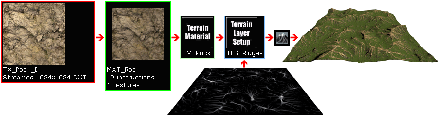
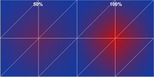
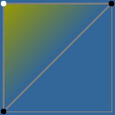
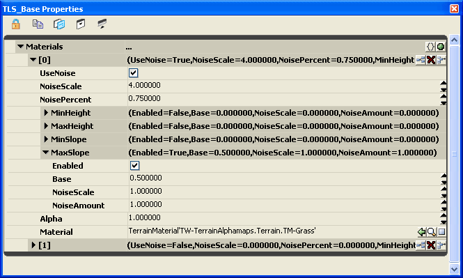
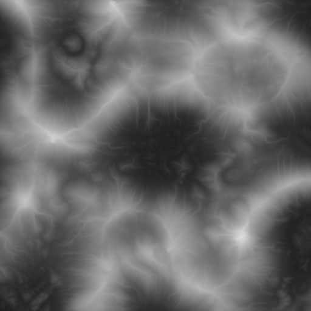
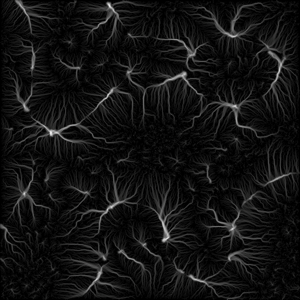
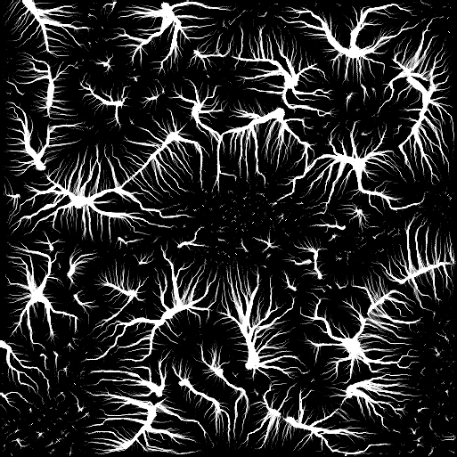
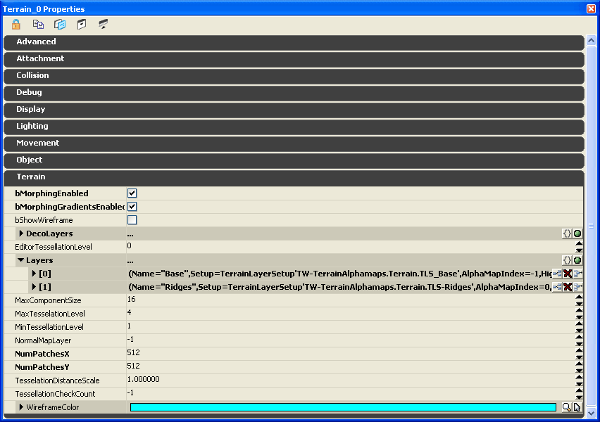
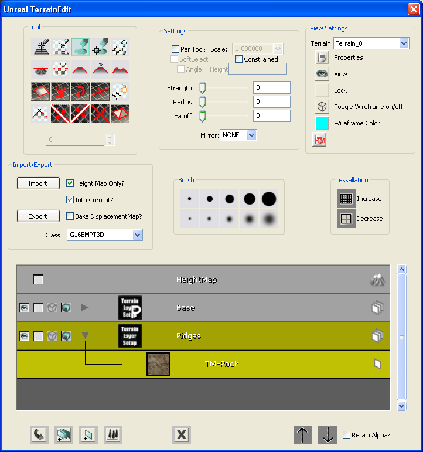
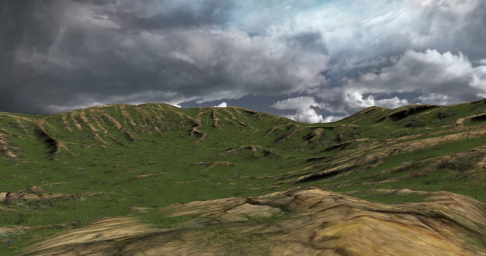

Terrain Alphamaps: Using externally-created texture layer alphamaps
Overview
A Terrain is essentially a 3D planar mesh object that is x*y vertices in size. The actual number of quad faces that are rendered is x-1 * y-1. So a 256x256 terrain requires a heightmap that is 257x257 in dimensional size. The Terrain Properties dialog specifies the terrain size in patches or quad faces (NumPatchesX and NumPatchesY), which is equivalent to the vertex count -1.
Alphamap Overview
To support the layering of multiple textures on the terrain, such as dirt, grass and rock, each layer uses an alphamap that determines where the texture is blended onto the terrain. This alphamap is also sometimes referred to as a weight map since it defines the weight of each texture blended. This alphamap is essentially a grayscale mask that is similar to an image alphachannel.
Each terrain layer alphamap is the same dimensional size as the underlying terrain heightmap, or mesh, with one pixel of alphamap being equivalent to one vertex of terrain, so the blending between texture layers is limited to the distance between the terrain mesh vertices. A 128x128 terrain therefore supports a fixed blend 129x129 pixel alphamap. The Terrain's DrawScale3D.X/.Y values determine the size of each blend area, so a DrawScale3D.X/.Y of 256 results in a terrain texture layer blend size of 256 Unreal Units. In other words, a single pixel of the alphamap is DrawScale3D.X/.Y in size on the terrain.

Each alphamap pixel value determines the percentage of opacity blending for the texture that will be applied to the equivalent vertex on the terrain. For this reason, the alphamap must be the same resolution as the heightmap, to provide a 1-to-1 corresponding blend value.
So as the engine renders the terrain triangles, it reads across the layer alphamap rows and columns to obtain the blend value for each texture at each heightmap vertex.
An alphamap value of 0 (black) results in no texture blend at that vertex, a value of 127 (gray) results in a 50% texture blend at that vertex, and a value of 255 (white) results in a 100% texture blend at that vertex.

The texture blending that occurs between terrain mesh vertices is a linear gradient and not a sharp change. In other words, the texture layer is smoothly blended over the texture beneath it from vertex to vertex. As shown in this example image of a single terrain triangle pair (a quad), the top-left terrain vertex has a corresponding full white alphamap value (255), while the other two triangle vertices have corresponding full black alphamap values (0). The texture layer will then be smoothly blended across the surface of the terrain triangle as a gradient from vertex to vertex. In this example, the underlying texture is blue and the layered texture is yellow, so a white alphamap value renders 100% yellow and a black alphamap value renders 100% blue. The surface of the triangle always shows a smooth gradient from the yellow to blue.

In Unreal Engine 3's terrain system, neither the heightmap or the alphamaps are visible in the Generic Browser?. This differs from previous engine versions.
Terrain Layer Setup
Unreal Engine 3's terrain system supports the basic requirements for the most common styles of terrain texture layering, by using the Height and Slope properties in the TerrainLayerSetup object. These are called procedural layer setups.
As shown in this example TerrainLayerSetup, this terrain layering consists of two layers with the lower layer [1] as the solid base layer, and the upper layer [0] constrained to slopes of 0 to 45 degrees (MaxSlope.Enabled = true and MaxSlope.Base = 0.5, where 0.5 = 45 degrees), resembling flatland texturing, where you might normally find grass.

Note that when multiple entries exist in a TerrainLayerSetup, they are layered in an upward direction, with the texture layers rendering from the bottom (highest entry number) to the top (entry number [0]). In the example TerrainLayerSetup above, entry [0] is rendered on top of entry [1].
While the procedural TerrainLayerSetup can easily supply your terrain with layering styles for flatlands (by height), cliff faces (by slope), and snow-crested mountain tops (by height), it cannot create the more complex geological texture layering such as mountain ridges or fluvial cuts. Neither can it produce texture layers for winding rivers or roads, where the height and slope of the geological system may vary across its entirety. For these types of more complex texture layers, your choices are to either hand-paint the layer in UnrealEd or use an externally created alphamap file.
Note that to hand-paint a texture layer, or to import an external alphamap into a layer, the TerrainLayerSetup must be a single layer style, it cannot be a procedural multiple layer style.
Mountain ridges (technically Dendritic ridges and Stratigraphic ridges) are the uneroded hard rock that is exposed from weathering. Fluvial cuts are caused by water flow erosion such as a river flowing down a mountain. The example terrain alphamap we will be using in this tutorial will show a ridge geological type of texturing.
Creating External Alphamaps
External alphamaps can be created either with third-party terrain heightmap software or by a good artist using paint software.
There are numerous third-party terrain heightmap software applications, such as HMES, Leveller, Terragen, World Machine, and others. Their ability to algorithmically generate different styles of heightmaps or alphamaps varies. No one specific package is being recommended here, and it may be up to the studio art lead as to what the company may be using to develop terrains in-house.
For the artists, the most common software application for hand-painting alphamaps is most likely Adobe PhotoShop, followed by other paint software such as Corel PhotoPaint, PaintShopPro, etc.
If you are hand-painting an alphamap, you would be brushing white onto a black background in the same fashion as creating an alphachannel mask, where white would be the displayed terrain texture layer. The advantage of using algorithmically generated alphamaps are that they can usually be created along with the actual terrain heightmap, saving considerable time and producing a complex design that may be difficult for an artist to duplicate by hand.
This tutorial won't cover every method of external alphamap creation, since it varies by the current studio art pipeline, and whether the art department or level designer is creating the heightmap and alphamap by hand or with third-party software. The example terrain heightmap and alphamap created for this tutorial were developed algorithmically through one application.
External Alphamap Format
The external alphamap file is simply an 8-bit grayscale image, similar to a mask or alphachannel, where black is 100% transparent, white is 100% opaque, and the levels of gray in between are varying degrees of transparency. The actual file format required by UnrealEd for importing alphamaps is the G16 .bmp format, similar to the external heightmap file format. It is possible to create the external alphamap using heightmap or paint software as an 8-bit grayscale bitmap, however, before importing the alphamap into UnrealEd it must be converted to a G16 format file. The 8-bits of data must be simply multiplied to 16-bits (*256 or <<8). The 16-bit data in the G16 alphamap is automatically converted back down to 8-bits when it is imported into UnrealEd. If the alphamap is being created in software that supports 16-bit formats such as Raw-16, then that file can be used directly without multiplying the data, it only requires conversion to a G16.
An external alphamap file must always be the terrain dimensions Terrain.NumPatchesX +1 by Terrain.NumPatchesY +1 in size. So a 128x128 terrain requires a 129x129 alphamap, a 256x256 terrain requires a 257x257 alphamap. When attempting to import an alphamap that is not of the proper size, an error will occur.
If the alphamap is being algorithmically generated by a software application that only supports power-of-two sizes, it will be required to edit the alphamap image and adjust it to the correct resolution by adding additional rows and columns of pixels to the edges. Alphamaps are top-left justified in UnrealEd for UE3, so it would be common to add one row and one column to the right and bottom sides of an alphamap so that it contains the same number of rows and columns as the terrain mesh.
Depending on the file format that the alphamap is created with, it must be multiplied to 16-bits and/or converted to G16. There are a number of third-party tools that support G16 conversion, including G16Ed and HMCS.
An Example Terrain with External Alphamap
Using a combination of software applications, the following heightmap was created for use as an UnrealEd terrain. The heightmap was saved as Raw-16 and converted to G16.

The custom "ridge" alphamap was algorithmically created along with the heightmap, saved as Raw-16 and converted to a 16-bit grayscale TIF to allow modification in paint software. This is the original Raw-16 alphamap:

The TIF-16 alphamap was modified in paint software to increase the curve level of brightness using a combination of Intensity and Contrast in multiple passes, then it was saved back out as a TIF-16, then converted once again to a G16 for importing into UnrealEd. UnrealEd for UE3 requires a higher contrast to the alphamap than previous Unreal Engine versions, so the alphamap will usually have to be more intense than those created for Unreal Engine 2 and 2.5.
The final TIF-16 looks like this:

Creating the Example Terrain with External Alphamap
These are the steps for creating a new terrain with a custom external alphamap.
For additional information on UE3 Terrain setup and importing algorithmic terrains see the UDN Terrain Topics.
1. Insert a Terrain actor into a new map. Set its Terrain.NumPatchesX and Terrain.NumPatchesY to the size of the custom heightmap G16 file -1, and Import the heightmap.
2. Insert a DirectionalLight to simulate sunlight. Change the Movement.Rotation.Pitch to -45 degrees.
3. Create a new TerrainMaterial for the base grass. Assign an appropriate texture.
4. Create a new TerrainMaterial for the ridge rock. Assign an appropriate texture.
5. Create a new TerrainLayerSetup for the base grass texture layer. Note that this can also be a multi-layer procedural setup if desired, such as a dirt base and a grass flatland from 0 to 30 degrees.
6. Create a new TerrainLayerSetup for the ridge rock texture layer. Note that this must be a separate single layer setup since multi-layer procedural setups do not support importing external alphamaps.
7. Add the two TerrainLayerSetups to the Terrain actor's Terrain.Layers array. Note that the layers are rendered upward from [0] in this dialog array list, so the layer [0] will be the base layer and all layers with higher numbers are rendered on top of that.

8. Go into Terrain Edit mode to display the Terrain Edit dialog. In the Import/Export group, check the "Height Map Only" and "Into Current" checkboxes so that it imports into the layer selection, select "G16BMPT3D" in the Class drop-down-combobox since this is a G16 .bmp we are importing, select the TerrainLayerSetup for the ridges that is to receive the custom alphamap (as noted by the yellow selection color on the dialog), then choose the Import button. Locate the external G16 alphamap file in the file dialog and open it. If there are no issues with the alphamap file, such as an incorrect file format or file dimensions, the alphamap should be loaded into the Terrain setup and applied to the selected layer. You may need to click on the "Recache Terrain Materials" button to update the terrain in the viewport. Note that the Base TerrainLayerSetup in this example is a multi-layer procedural setup of dirt and grass, as noted by the large "P" on its icon, and the Ridges TerrainLayerSetup that the alphamap was imported into is located below that.

After a Build All in UnrealEd, the final terrain looks like this. Note the rocky terrain ridges.

Important!
You are viewing documentation for the Unreal Development Kit (UDK).
If you are looking for the Unreal Engine 4 documentation, please visit the Unreal Engine 4 Documentation site.